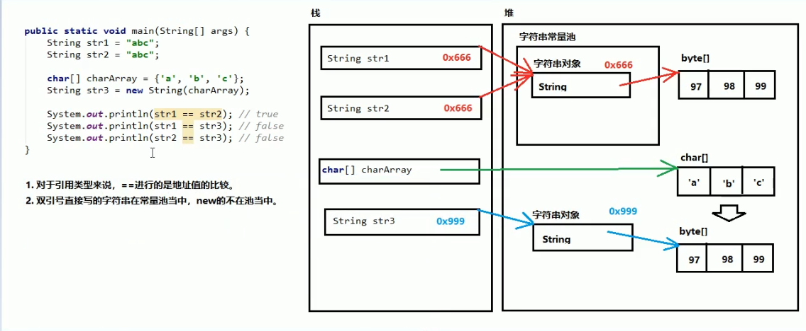

API
应用程序编程接口
Scanner类
将键盘输入的数据到程序中
1.导包
2.创建
Scanner 对象名 = new Scanner();
3.使用
int num = 对象名.nextInt();
String str = 对象名.next();
匿名对象
new 类名称();
使用
new 类名称().成员变量/成员方法()
只能使用一次，下次再用到时会重新创建一个新对象
匿名作为方法参数
方法名(new 类名称()),也可作为返回值
Random类
随机生成一个数
Random r = new Random();
r.nextInt();
括号指范围，如填100就是[0,100), r.next(100) + 1的范围则为 [1,101)
ArrayList类
ArrayList集合 <E>代表泛型，长度可改变
泛型特点：统一集合内元素类型
注意：泛型类型只能时引用类型
ArrayList<String> list = new ArrayList<>();
list.add() 向集合中添加元素
list.get(int index) 获取元素
list.remove(int index) 删除元素
list.size() 集合尺寸长度
遍历集合
for(int i; i < list.size(); i++){
System.out.println(list.get(i));
}
想集合中存储基本类型，要用基本类型的包装类
byte Byte
short Short
int Integer
long Long
float Float
double Double
char Character
boolean Boolean
String类
特点
1.字符串内容不能改变
2.字符串可以共享使用
3.效果上相当于char[]数组,底层原理时byte()字节数组
创建字符串
直接 String str = "";
使用空参 String str = new String();
char[]数组 char[] charArray = {}
String str = new String(charArray)
byte[] byte[] byteArray ={}
String str = new String(byteArray)
字符串常量池

比较内容的方法
字符串.equals(字符串) 比较两个字符串内容是否一样，如果比较双方一个常量一个变量，建议常量写前面
eaualsIgnoreCase() 忽略大小写比较
获取相关方法
length() 获取个数
concat() 将当前字符串与参数字符串拼接
charAt() 获取指定索引位置字符
indexOf() 查找参数字符串在字符串中首次出现的索引位置
转换相关方法
toCharArray() 将字符串拆分成字符数组
getBytes() 获取字符串底层数组
replace(old, new) 用new字符替换old字符
分割相关方法
split(0 按参数的规则将字符串分成若干部分
static关键字
一旦用static，那么这样的内容就不再属于对象，而属于类，所以凡是本类的对象，都共享同一份
使用
类名.静态变量
类名.静态成员方法()
静态方法不能访问非静态成员变量
静态方法不能使用this关键字
static代码块
static{
代码块
}
静态代码只执行一次，且在成员方法之前执行
用来一次性对静态成员方法赋值
Arrays类
与数组相关的工具类，里面有大量静态方法
Arrays.toString() 将数组变成字符串
Arrays.sort() 默认从小到大，将数字排序
Math类
与数学相关的工具类，里面有大量静态方法
Math.abs() 取绝对值
Math.ceil() 向上取整
Math.floor() 向下取整
Math.round() 四舍五入
Math.PI 圆周率